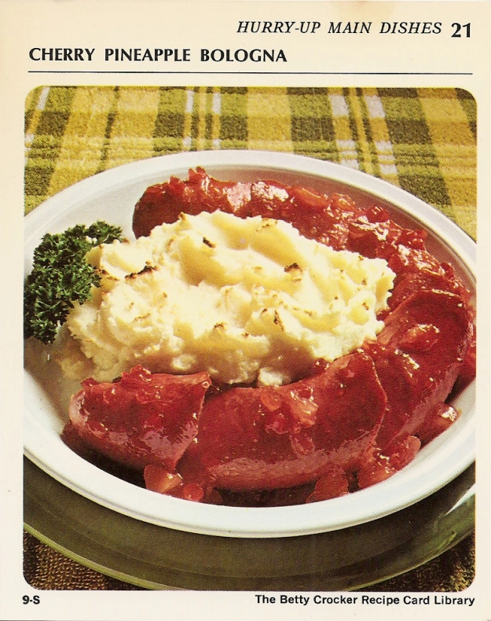

Back to Table of Content
Cherry Pineapple Bologna
Cherry Pineapple Bologna

Ingredients
- 1 pound ring bologna
- Cherry Pineapple Glaze (Below)
- Potato Buds instant puffs(enough for 4 servings)
Cherry Pineapple Glaze
- 1/2 cup crushed pineapple
- 1/4 cup coarsely chopped maraschino cherries
- 1/4 cup light corn syrup
- 2 tabelspoons white vinegar
- 1/4 teaspoon cloves
- 2 drops red food color
- 11/2 teaspoons water
- 11/2 teaspoons cornstarch
Preaparation
- If necessary remove casing from bologna; arrange bologna in ungreased 9-inch pie pan.
Cut ring diagonally at 2-inch intervals, being careful not to cut completely through.
Separate cuts and spoon in part of glaze.
Spread remaining glaze on top.
- Heat oven to 400°.
Prepare Potato Buds instant puffs as directed on package.
Mound potatoes in center of ring.
Bake 20 minutes or until potatoes are light brown.
4 servings.
Cherry Pineapple Glaze
- Heat pineapple, cherries, corn syrup, vinegar, cloves and food color to boiling, stirring occasionally.
Reduce heat; simmer 15 minutes.
Blend water and cornstarch; stir into fruit.
Cook, stirring constantly, until mixture thickens and boils.
Boil and stir 1 minute.